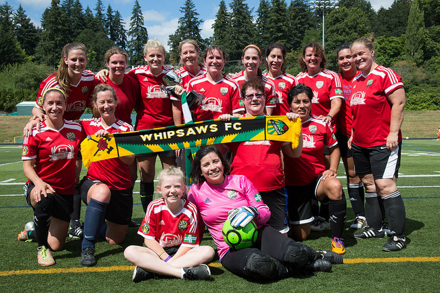

The Adventures of Petite Hijinks and Cleyre
This is a little about me, my life, and my cute cat Cleyre
me

My name is Rachel Etnire. I am 29 years old, was born in Las Vegas, Nevada, and have been lucky enough to live and travel to quite a few places including Washington, DC, Edinburgh, Scotland, and Vladimir, Russia. I now reside in Portland, Oregon with my partner, Nicholas, and my rude, snooty cat, Cleyre. I became interested in learning to program when I realized that there are very few programmers who look like me. I currently work at a prominent Portland tech company and Hispanic engineers are very underrepresented. I would like to change that ratio, move up at my company, and continue to learn new, valuable skills. I was once told that I couldn't do this, and it's time to show the world what I am truly capable of.
For more information about me, because I know you can't get enough, please visit my Facebook and LinkedIn pages.
Cleyre
I love my cat so much that the first website I ever built on my own was about her. Cleyre is a 6 year old Dilute Tortoiseshell cat. She is an incredibly large pain in my ass and likes to scream in my face at 4:00 AM about how there is a hole in her food bowl and she thinks she might actually die. She has a small black spot on the bottom of her mouth that makes her look like she is eternally sneering and displeased with the world around her. She also never seems to think it is necessary to bury her own poop and relies on her human slaves for such plebeian tasks. Despite her penchant for using her razor claws to make biscuits on my tender bits, she actually falls asleep snuggled on my stomach, purring, every night. So, I guess she's okay.
I encourage everyone to help end petlessness by adopting an animal from the fine folks at the Oregon Humane Society. Remember, adopt don't shop.

Hobbies

Education program manager by day, soccer goalkeeper by night! All of my hobbies involve player soccer and being absolutely immersed in the Portland soccer scene. I love the culture surrounding the Timbers, Timbers Army, and the Timbers Army Football Club (TAFC). TAFC is a network of teams supported by the Timbers Army and comprised of Timbers Army members that play in the Portland metropolitan area. The purpose of TAFC is to make a positive impact in our leagues and our communities. If I am not playing keeper with the Whipsaws, you can typically find me cheering my ass off in section 108 of Providence Park at each home game (or chasing the Timbers across the country for away matches).
You can find out more about the Whipsaws FC by visiting our website built by someone with better website building skills than I currently have.
Github
Cat Website
This is a simple website about my cat that I created within the first week of Epicodus. This was to test changing colors, fonts, etc. It uses HTML and very basic CSS.
Favorite Band
This a "favorite band" for an imaginary band called Kittencakes. This was to test using the box models, floats, and sidebars. It uses HTML and very basic CSS.
Blogging Site
This is a fun, fake blog about, you guessed it, cats. It was to test my partner and I's knowledge of the box model, floats, divs, and spans. It uses HTML and very basic CSS.
Cupcake Shop
This is a website for a cupcake store (that specializes in cat cupcakes). Again, this was to test basic elements like divs, spans, colors, and other inline elements. It uses HTML and very basic CSS.